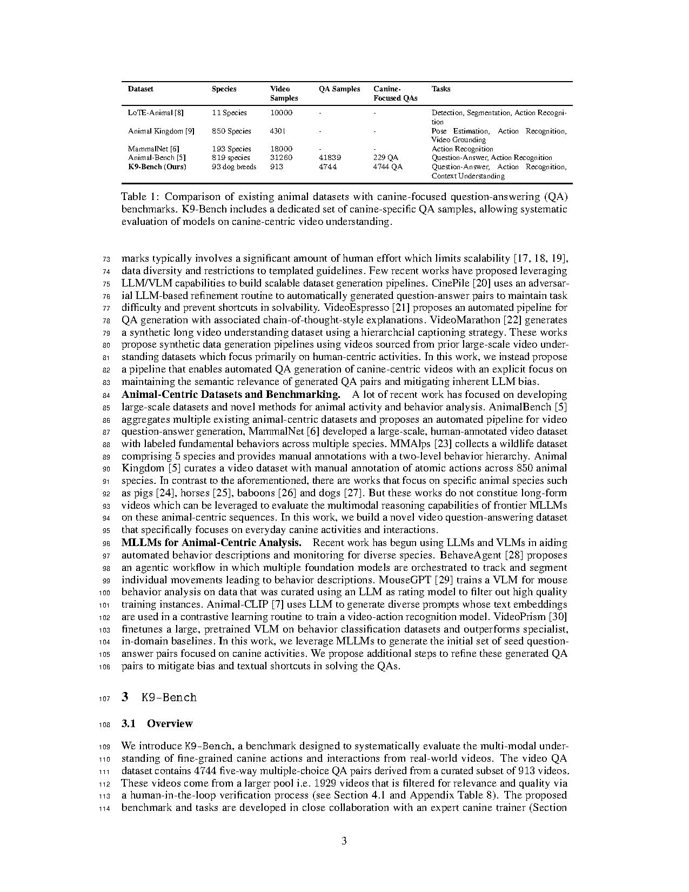
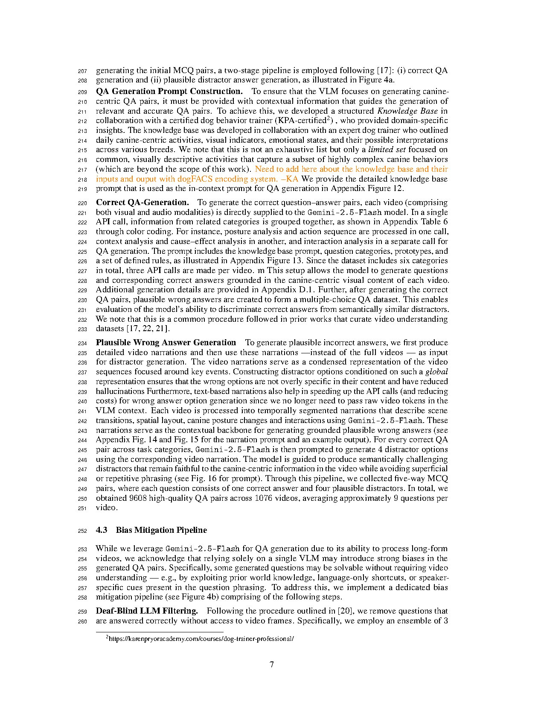

assets/k9bench_fig.jpg to populate this slot.We introduce K9-Bench, a new benchmark of approximately 5,000 video and question-answer pairs drawn from 913 real-world videos of domestic dogs. The benchmark is organized into five distinct task categories, including posture analysis, action sequence, context analysis, cause and effect reasoning, and interaction analysis. Together these categories are designed to test long-horizon, fine-grained multimodal reasoning that goes beyond the human-centric scenes that dominate existing video benchmarks.
To scale this setting beyond what is feasible with manual annotation, we propose a VLM and LLM-powered pipeline that automatically mines canine-centric videos from open web sources and constructs semantically rich question and answer pairs. The pipeline explicitly addresses semantic relevance, textual shortcuts, and model bias, and the same pipeline is general enough to be adapted to other low-data domains beyond dogs.
Frontier MLLMs exhibit limited zero-shot performance on canine-centric tasks. State-of-the-art closed-source models outperform open-source counterparts, but they still struggle with compositional reasoning over subtle posture and interaction cues spread over long temporal horizons. Generic chain-of-thought prompting provides only modest improvements, suggesting that long-horizon canine reasoning is a real and underexplored capability gap.

@inproceedings{thukral2026k9bench,
title = {K9-Bench: Evaluating Multimodal LLMs on Canine-Centric Videos},
author = {Thukral, Megha and others},
booktitle= {Submitted to NeurIPS 2026 Datasets and Benchmarks Track},
year = {2026}
}